Префектура Ниигата · Цубамэ и Сандзё · ремёсла
Цубамэ и Сандзё: как кованые гвозди превратились в ножи, сковороды и столовые приборы
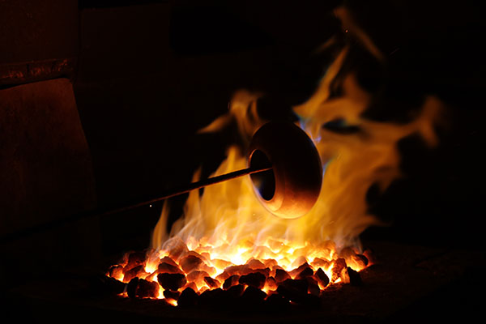
Цубамэ и Сандзё вместе называют Цубамэ-Сандзё, и местные мастера говорят, что нет такой металлической вещи, которую здесь не смогли бы сделать. Всё началось с гвоздей, которые крестьяне ковали в свободное от поля время.
История
Край, где река заставила взяться за молот
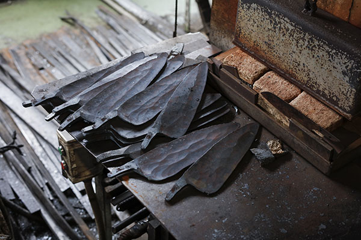
Цубамэ и Сандзё стоят почти в самом центре префектуры Ниигата, среди рисовых полей, по которым неторопливо течёт река Синано. Цубамэ-Сандзё это общее название двух соседних городов и их окрестностей. Здесь собрано множество маленьких металлообрабатывающих предприятий, чаще всего семейных, и край называют городом, где больше всего директоров компаний в Японии. Местные мастера говорят о себе с гордостью: «В Цубамэ-Сандзё можно сделать любую металлическую вещь».
Ниигата славится рисом, но этим двум городам одного земледелия никогда не хватало: Синано то и дело выходила из берегов и губила урожай. Людям нужно было другое ремесло. По счастью, в горах было много руды, а в огромных лесах легко было нажечь угля для горнов. Все условия для кузнечного дела сошлись в одном месте.
В эпоху Эдо крестьянам советовали ковать японские гвозди вакуги как подсобный промысел. Спрос на них резко вырос после больших пожаров в Эдо, нынешнем Токио, где город приходилось отстраивать заново, и промысел разросся, а среди крестьян появились кузнецы, которые жили уже только ремеслом. В середине эпохи Эдо странствующий мастер из Сэндая научил жителей Цубамэ искусству цуйки-доки: медную посуду выколачивают молотком из одного листа металла. С тех пор здесь умели делать самые разные изделия из металла.
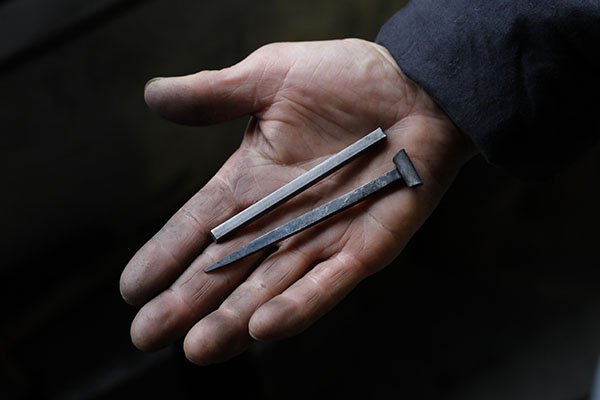
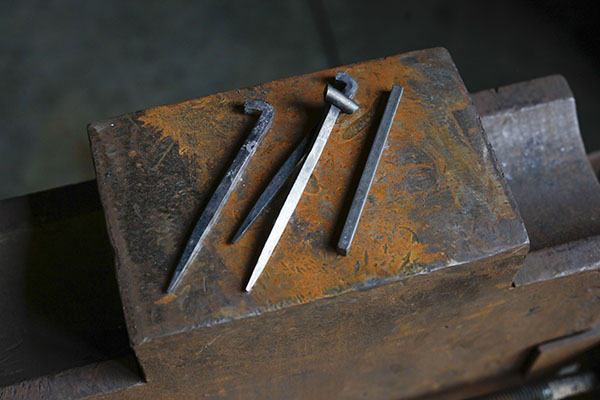
Гвозди, выкованные вручную по одному, очень прочны, и считается, что они могут служить больше тысячи лет. В этой выносливости местные жители видят свой собственный характер, поэтому гвоздь стал символом Цубамэ-Сандзё.
В эпоху Мэйдзи спрос на японские гвозди упал, и тут два города показали, на что способны. Сандзё развивал кузнечное дело вглубь: от гвоздей кузнецы перешли к плотницкому инструменту, а затем к кованым лезвиям и ножам. Цубамэ пошёл вширь: опыт гвоздей и чеканной меди пригодился для курительных трубок, напильников, а позже для столовых приборов европейского образца.
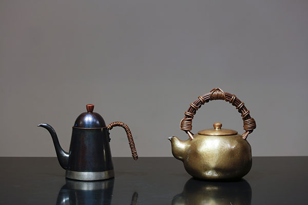
Из этой истории выросли марки, которые знают не только в Японии: мастерская чеканной меди Gyokusendo, производитель снаряжения для отдыха на природе Snow Peak, ножевая мастерская TADAFUSA. В 2017 году в городах уже вовсю шумел фестиваль открытых мастерских «Коба-но сайтэн».
Музей
Музей кузнечного дела в Сандзё
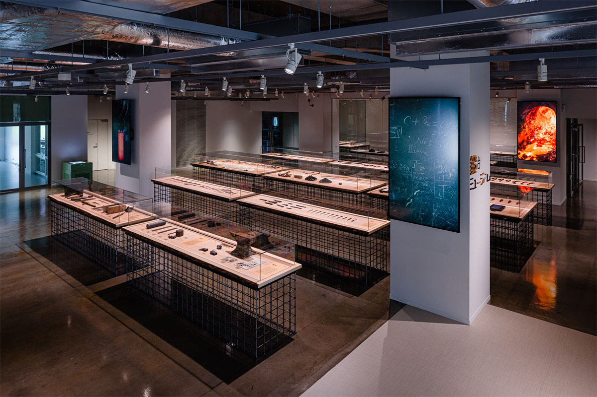
С чего начать знакомство с краем, если вы не кузнец? В Сандзё для этого есть музей кузнечного дела. Он занимает часть общественного комплекса «Матияма». Музей стоит у самого входа, так что кузнечное дело видит каждый, кто сюда заходит. Девиз комплекса: «учиться, смотреть, трогать».
Зал задуман как кузница. Стен почти нет, и музей плавно перетекает в соседние пространства. Вентиляционные трубы и проводка под потолком оставлены на виду, бетонный пол не покрыт ничем, а витрины сделаны из криптомерии. Всё вместе напоминает грубую рабочую мастерскую.
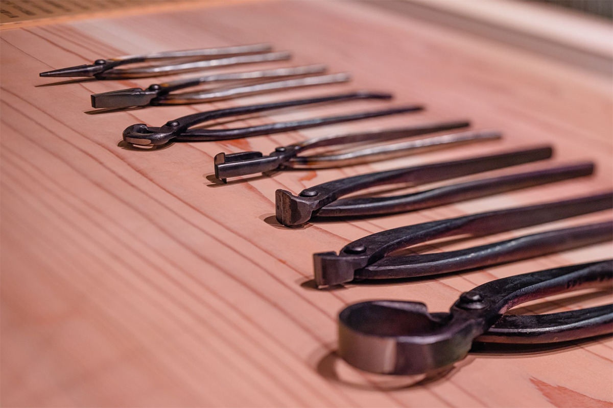
Здесь объясняют основы: что такое кузнечное дело и чем железо отличается от стали. Показывают, как стальная заготовка шаг за шагом превращается в готовое изделие, и выставляют «инструменты для изготовления инструментов», которыми пользовались кузнецы Сандзё и которые обычно не увидишь. Отдельно рассказано о ковке и о том, без чего она невозможна: о температуре металла. Сами кузнецы Сандзё в один голос называют самым интересным этапом горячую ковку, и её главный секрет, управление жаром, разобран в музее на подробных фотографиях.
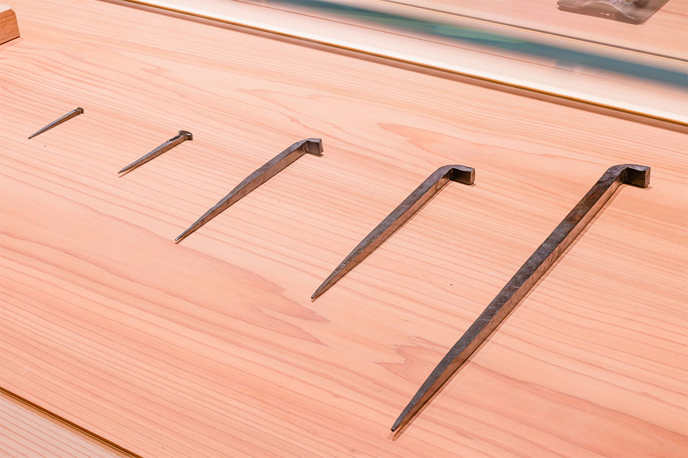
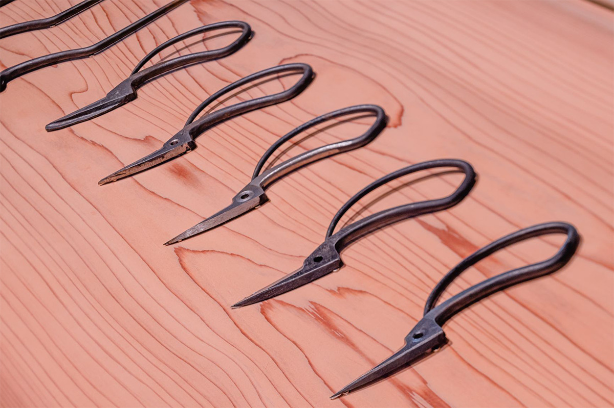
Ещё одна часть экспозиции рассказывает, на чём держалось ремесло: на лесах, дававших уголь, и на больших реках, вокруг которых стоит Сандзё. Благодаря рекам здесь выросли и купцы Сандзё, развозившие изделия по стране. Выставлены и современные кузнечные изделия города, удивительно разнообразные. Кроме постоянной экспозиции несколько раз в год проходят тематические выставки, а на одной витрине ещё чаще меняются маленькие выставки о разных сторонах ремесла.
Музей задуман как отправная точка для поездок по мастерским Сандзё: кто понял основы, тому интереснее смотреть, как работают кузнецы.
Музей кузнечного дела в комплексе «Матияма»
- Адрес
- префектура Ниигата, Сандзё, Мотомати, 11-6
- Телефон
- +81 256-34-5610 (по будням 8:30–17:30)
- Часы работы
- 9:30–22:00
- Выходные
- третий понедельник месяца, последний день месяца (если он выпадает на выходной, праздник или понедельник, то предыдущий будний день), новогодние праздники
Сандзё
«Нокадзи Ямаго»: сковороды деревенского кузнеца
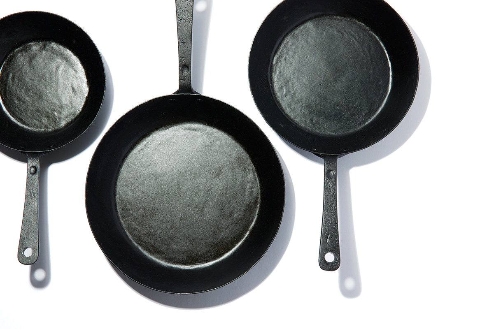
Кузнечная мастерская «Кондо Сэйсакусё» работает в Сандзё больше 150 лет. Когда-то она была мастерской нокадзи, деревенского кузнеца. Так называли кузнецов, которые слушали соседей и делали или чинили любые вещи для их хозяйства, и когда-то такой кузнец был в каждой округе. Мастерская решила вернуться к этому началу и завела собственную марку «Нокадзи Ямаго». Её задача, по словам сотрудницы мастерской, в эпоху массового производства и потребления вернуть привычку долго и бережно пользоваться вещами.
Сначала марка выпускала то, что мастерская умела лучше всего: лопаты и другой садовый инструмент. Позже по просьбам домохозяек появились сковороды под названием «Чуть глубже обычной». В них удобно перемешивать, ручка не слишком длинная и не мешает у плиты, а сковороду можно прямо так поставить в духовку. Чем дольше ею пользуешься, тем больше к ней привязываешься.
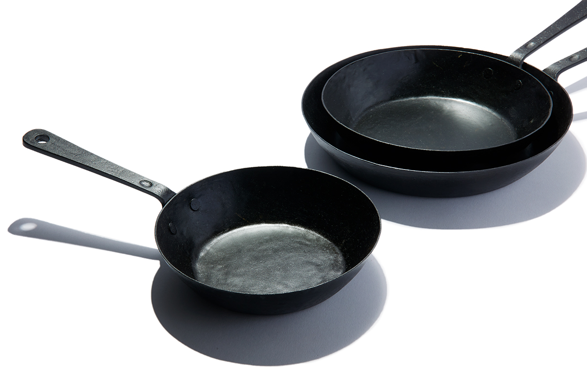
Самая маленькая, диаметром 18 см, рассчитана на завтрак: в неё как раз помещаются яичница и сосиски, а вечером в ней можно приготовить закуску вроде ахильо. Сковорода на 22 см подойдёт семье из двух-трёх человек: в ней жарят омлет или две-три рыбы, а из-за глубины еда не выплёскивается, даже если сковороду наклонить. Самая большая, на 26 см, рассчитана на большую семью или поход большой компанией, и в ней удобно готовить блюда с соусом, например мапо тофу.
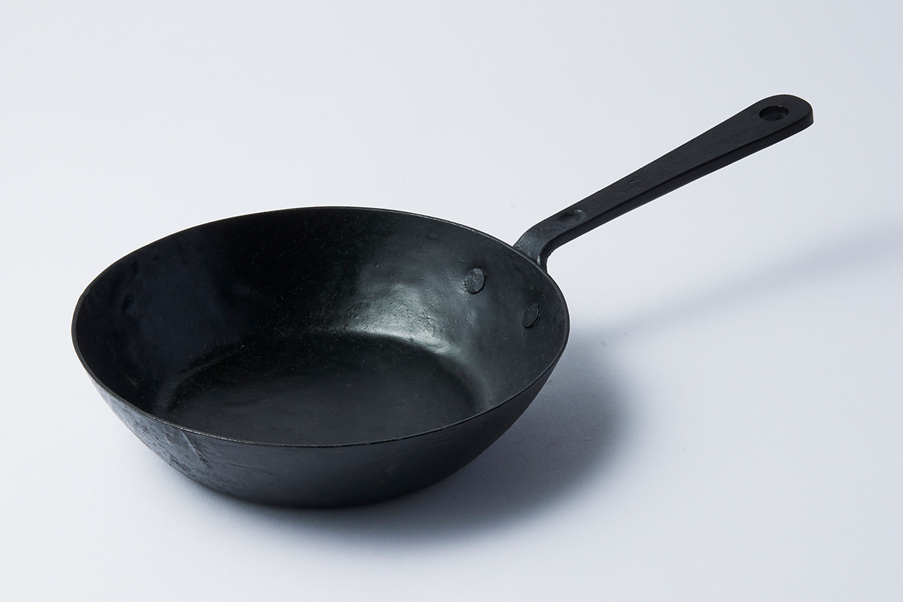
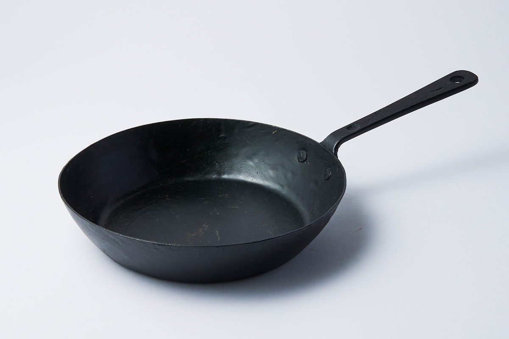
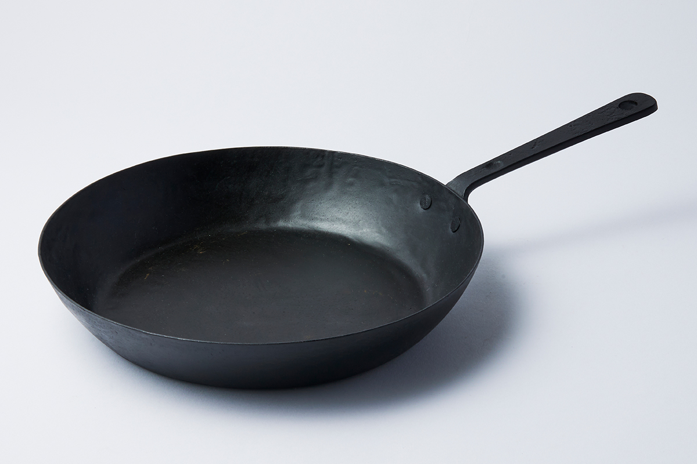
Сковороды «Нокадзи Ямаго» продаются в фирменном интернет-магазине марки.
Цубамэ
TSUBOE: тёрки, выросшие из напильников
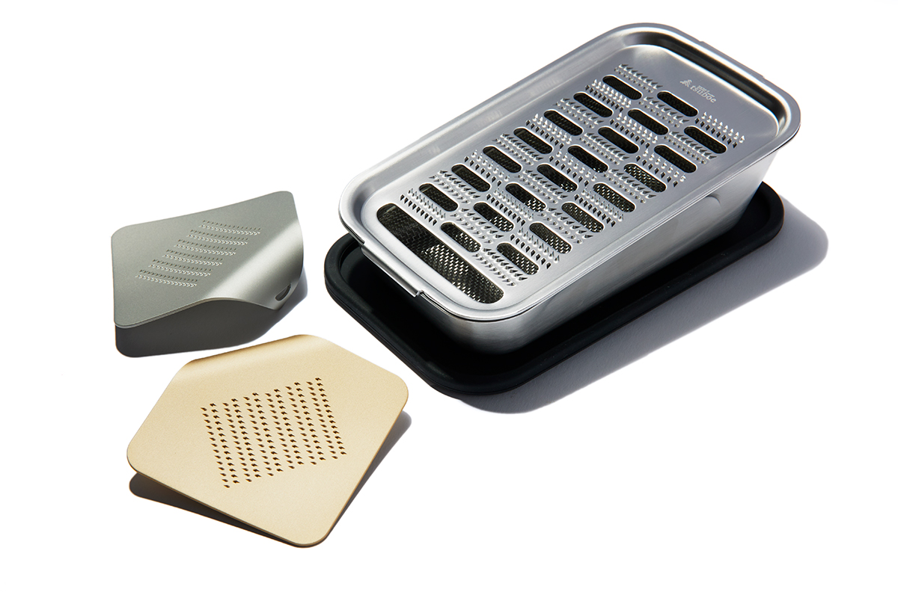
Мастерскую TSUBOE в Цубамэ основали в 1907 году, и сначала здесь делали напильники. Третье поколение семьи применило технику изготовления напильников к тёркам, и с тех пор TSUBOE делает тёрки и другие металлические изделия. Глава мастерской в четвёртом поколении развивает технику дальше и добивается, чтобы тёрка была одновременно удобной и красивой.
Тёрку irogami мастерская сделала вместе с молодыми дизайнерами. Она похожа на лист цветной бумаги для оригами: так и переводится её название.
«Мы хотели сделать совсем новую тёрку, отдельно от нашей лучшей. Качеством не поступились ни в чём, но старались, чтобы её форма и ощущение в руке были простыми и привычными. Её стали ценить и за границей. Хочется, чтобы ею пользовалось как можно больше людей, в Японии и в других странах»
глава TSUBOE
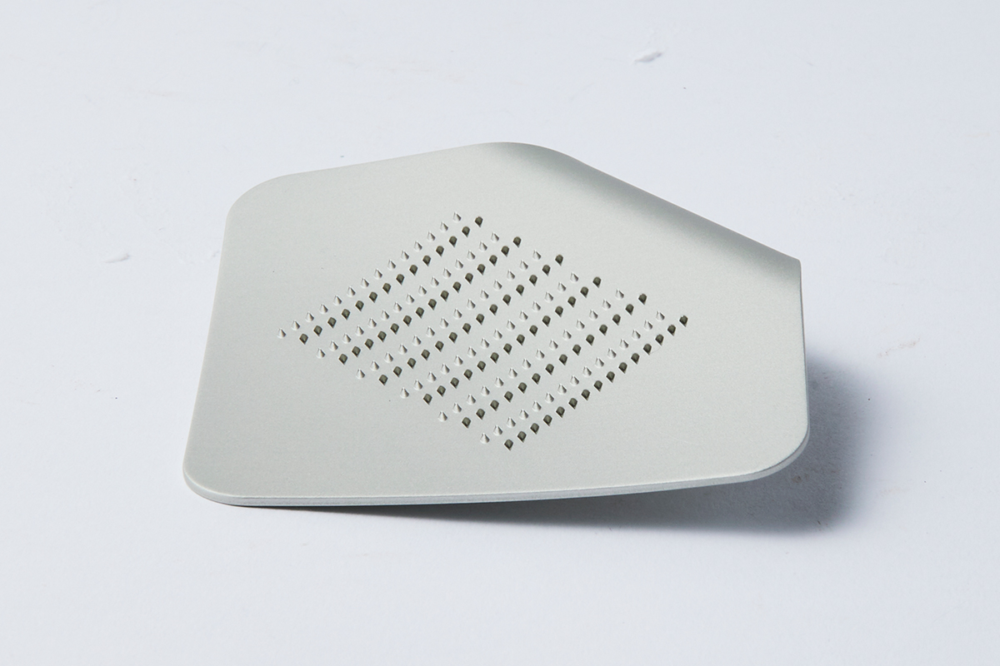
Лучшая тёрка мастерской называется «Хако», «коробка». Чтобы продукт отдал свой вкус и аромат полностью, каждый зубец на ней выверен вручную: длина, угол наклона, порядок в ряду. В наборе контейнер, сама тёрка и дуршлаг, а силиконовая крышка, если подложить её под низ, не даёт тёрке скользить по столу.
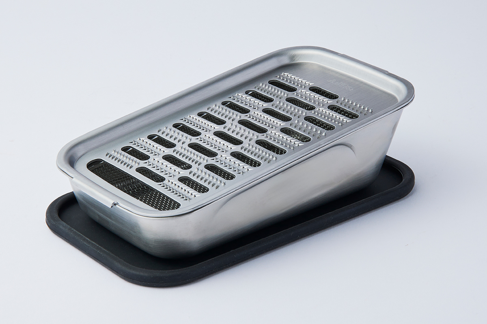
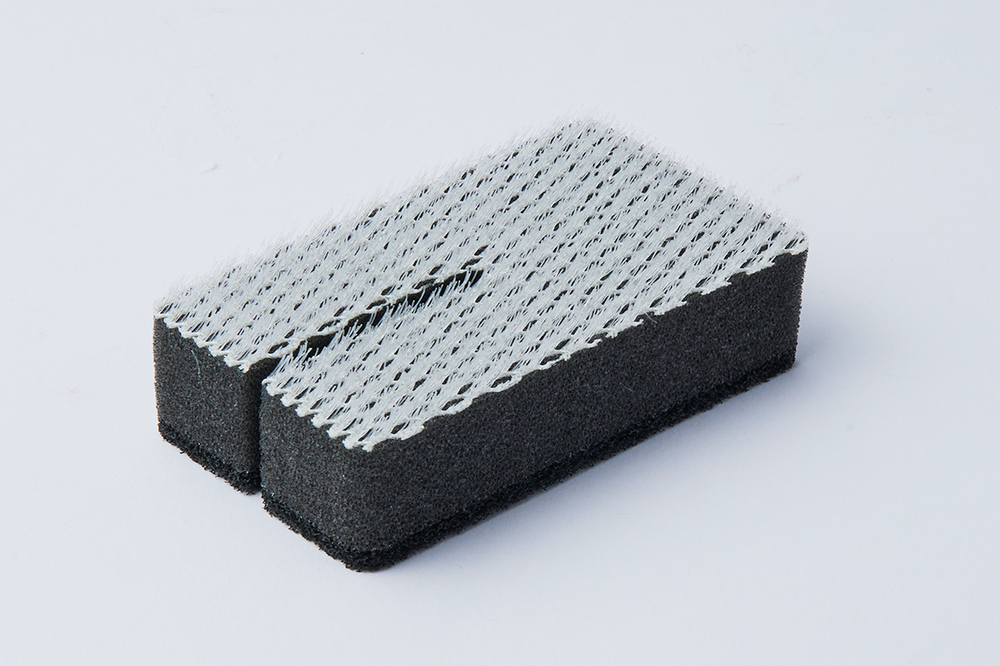
Тёрки TSUBOE продаются в магазинах.
TSUBOE
- Адрес
- префектура Ниигата, Цубамэ
- Сайт
- tsuboe.co.jp
Цубамэ
Kobo Aizawa: дизайн как «приложение к функции»
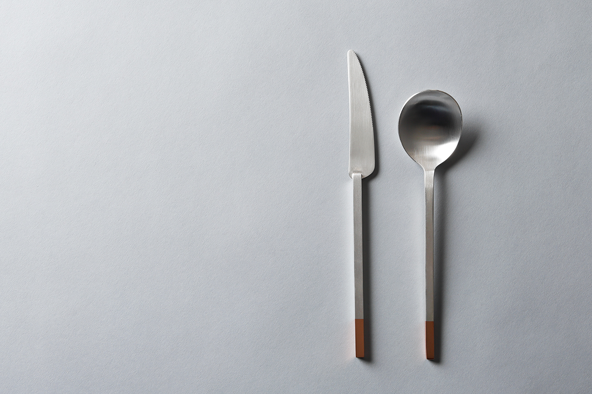
Kobo Aizawa основали в Цубамэ в 1922 году. Сначала это была лавка плотницкого инструмента: пил, рубанков. В середине эпохи Сёва на стройки пришёл электроинструмент, и семья постепенно перешла от инструмента для профессионалов к кухонной утвари для дома. Узнать её вещи легко по полному отсутствию украшений.
Глава мастерской в пятом поколении скромно говорит, что дизайнерского таланта в семье никогда не было. Но вещи здесь не заказывали дизайнерам, а доводили до удобства опытом и чутьём, и в 1986 году матовые приборы цвета туши MONOPRO+BOXER вошли в постоянную коллекцию Музея современного искусства в Нью-Йорке.
«Наши вещи это то, что получилось, когда мы до конца додумали, каким должен быть удобный инструмент. А дизайн, по-моему, просто приложение к функции»
глава Kobo Aizawa
Однажды мастерская пыталась придумать новую кастрюлю юкихира, японский ковш с ручкой. После всех проб она вернулась к привычной форме.
«Форма юкихиры, которую знают все, сохранилась именно потому, что она самая удобная. Я на себе понял: если гнаться только за красотой, вещь получится неудобной»
глава Kobo Aizawa
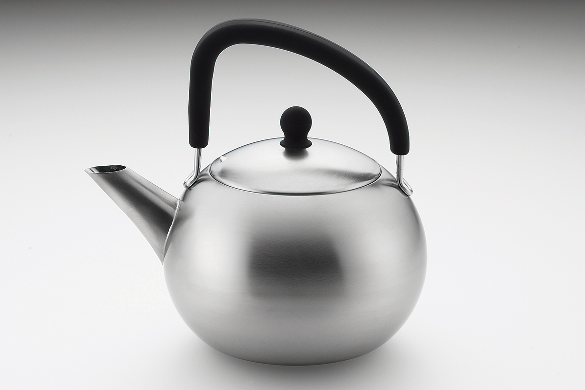
Медные приборы на три поколения
Та же вечная простота у серии приборов из чистой меди. Предыдущий глава мастерской сделал для неё маленькую вилочку и ложку для крема, а пятый глава добавил десертные ложку и нож: форма прежняя, но пользоваться ими можно для чего угодно.
«Чаще всего мы берём приборы в руки, когда едим рис и всё остальное. Поэтому мне хотелось сделать вещи именно для обычной еды»
глава Kobo Aizawa
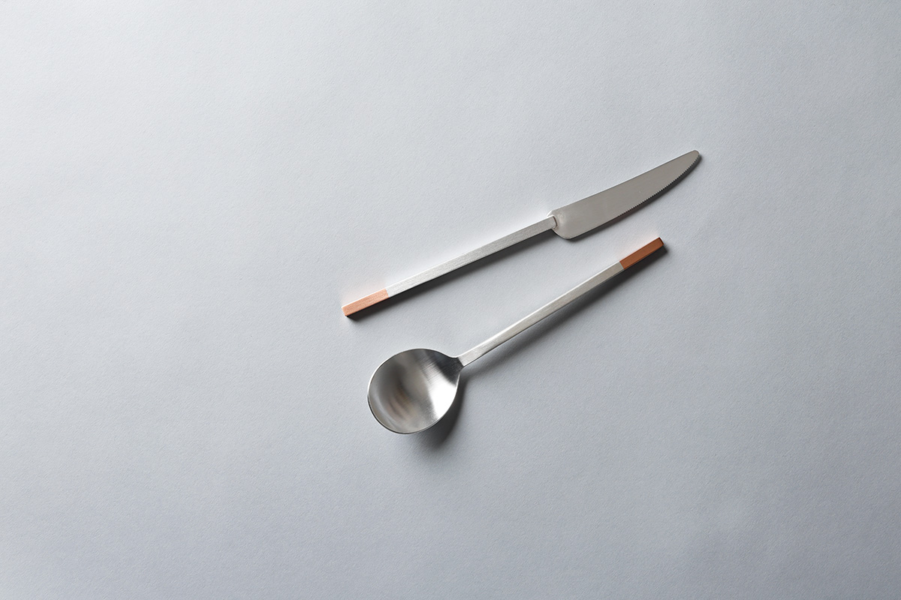
Медь покрывают серебром. Вероятно, такие приборы появились, когда серебро считалось лучшим, что может быть на столе, но, по мнению главы мастерской, задумывали их ради другого: медь, как и серебро, с годами меняется и становится только красивее. Приборы вырезают из медного листа толщиной 5 мм, и они приятно тяжелят руку. Такая толщина стала результатом того, что семья всерьёз относилась к своему делу.
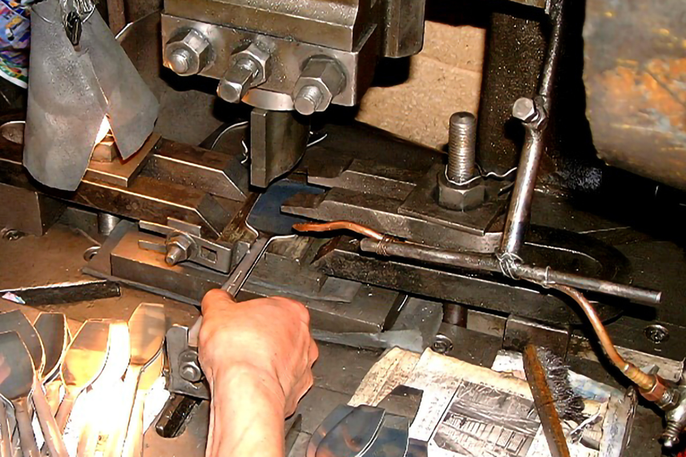
«Мы полируем каждую мелочь, почти чересчур тщательно, и хотим, чтобы приборами пользовались три поколения. Поэтому пусть покупатель заранее знает и их достоинства, и то, как они меняются со временем. И это всё-таки инструменты на каждый день: поели, вымыли руками, вытерли насухо. Больше ничего не нужно»
глава Kobo Aizawa
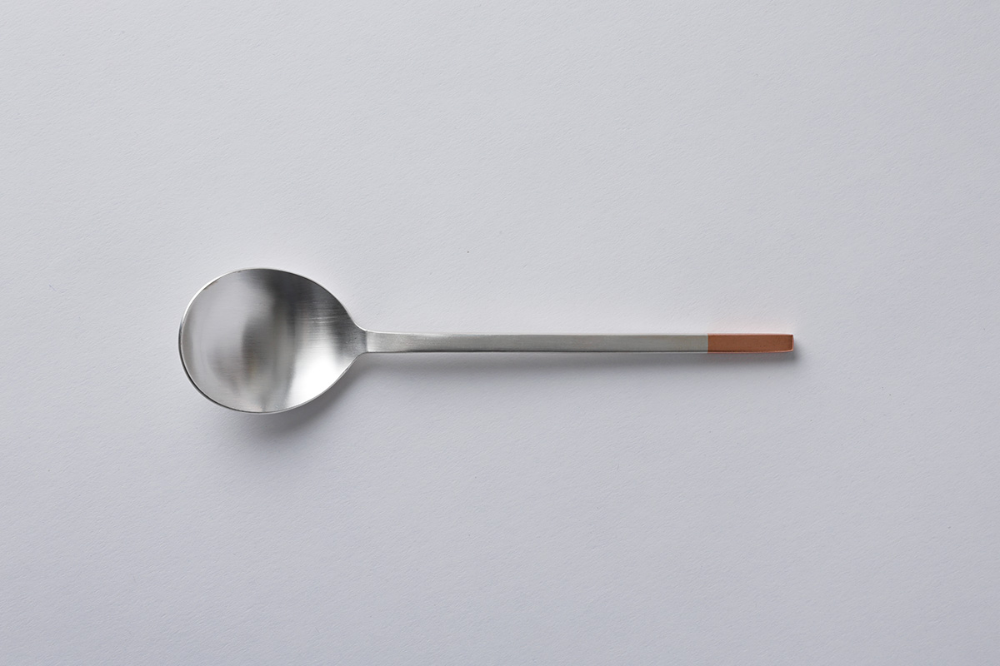
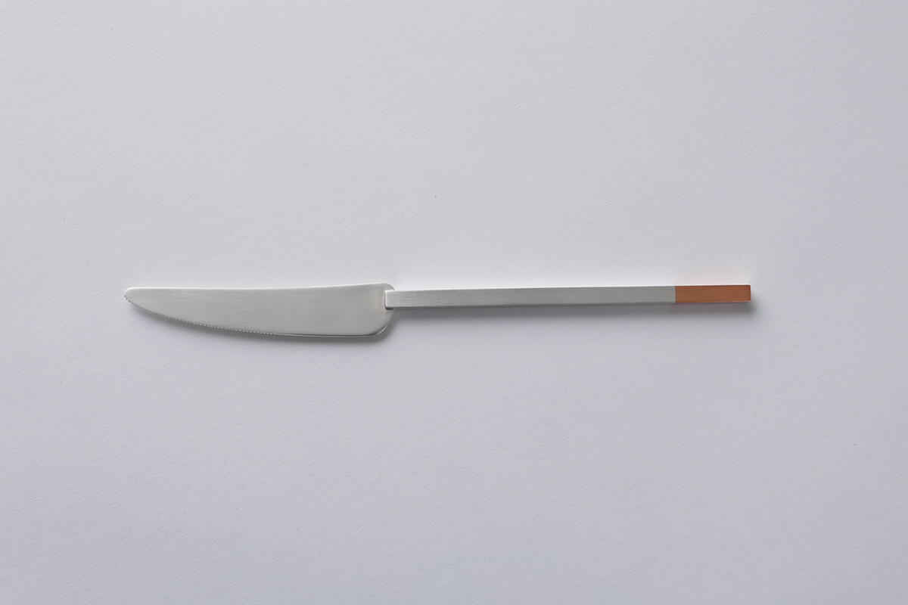
Серия «Пасэри»: полвека без изменений
Утварь Kobo Aizawa глава мастерской сравнивает с одеждой, которую надеваешь чаще всего: это не смелая вещь от знаменитого модельера, но к ней почему-то всё время тянется рука.
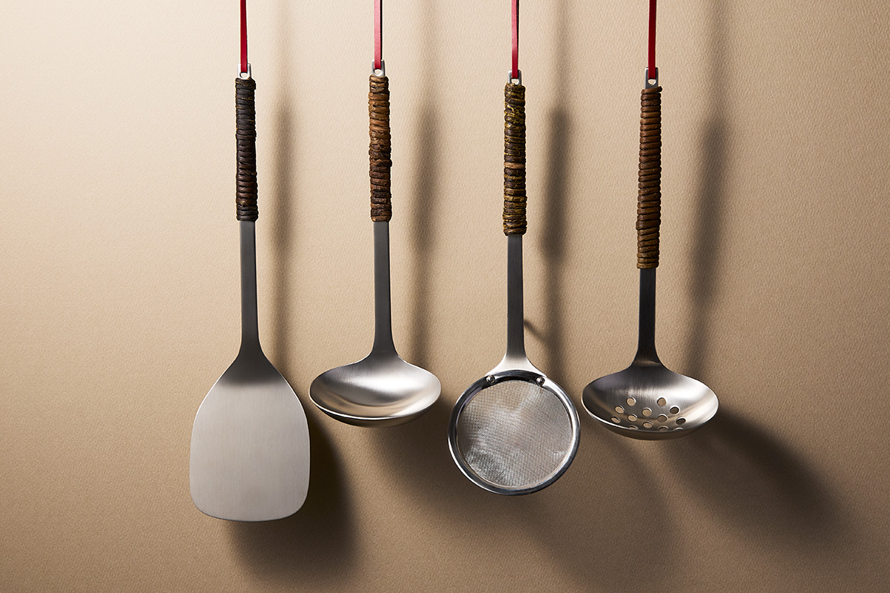
Серию «Пасэри», что значит «петрушка», придумал глава мастерской два поколения назад, около 1975 года. Каждый предмет сделан из цельного листа нержавеющей стали. Серия с тех пор не изменилась ни в чём и до сих пор продаётся: это старейший товар мастерской. Она не выглядит старомодной, потому что её всегда придумывали, представляя руки того, кто готовит. Времена и кухня меняются, а сама готовка остаётся прежней.
«В нашей семье, и я тоже, никто не считает себя дизайнером. Кто будет этим пользоваться и как? Если додумать это до конца, всё само становится простым»
глава Kobo Aizawa
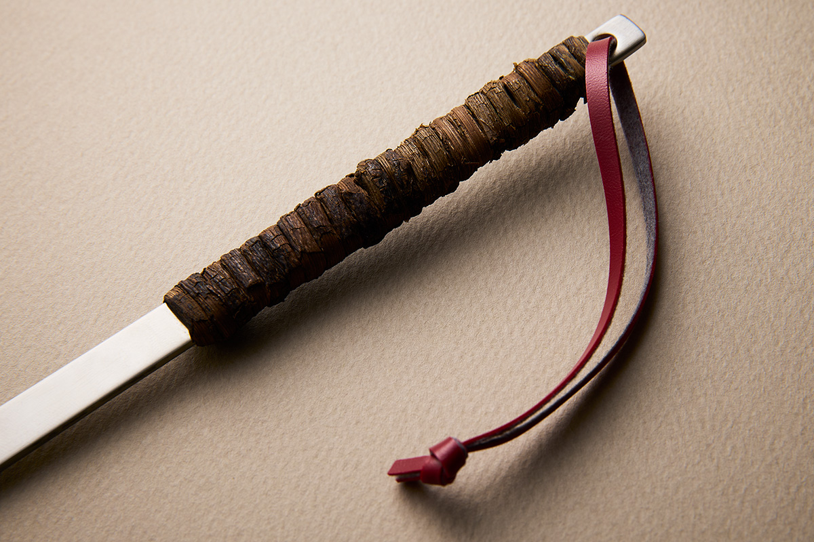
Материал серии: нержавеющая сталь 18-8. К железу добавлены 18% хрома и 8% никеля, поэтому она почти не ржавеет. Если придать объёмную форму цельному листу нержавеющей стали, его обычно ведёт, но мастерская справилась с этим с помощью опыта, накопленного на столовых приборах. Ручки при прошлом главе стали обматывать лозой акебии, потому что покупатели жаловались, что они нагреваются.
Лозой акебии когда-то даже плели подвесные мосты, она очень прочная и хорошо сочетается со сталью. Но сохранится ли она, зависит от хозяина: из-за посудомоечной машины и сушилки лоза усыхает, поэтому серию лучше мыть руками и сушить на воздухе.
«Если вкладываешь в вещь заботу, к ней привязываешься и начинаешь её беречь»
глава Kobo Aizawa
Когда-то в середине января на ярмарки, где торговала мастерская, приходили родители с детьми, которые собирались жить отдельно. Кастрюли и дуршлаги покупали, а про половник говорили, что сойдёт и из магазина за 100 иен. Зато к июню половники вдруг начинали раскупать: видимо, после нескольких месяцев готовки хочется уже нормальную вещь.
Небольшие предметы серии подходят и для одного, и для двоих, и для семьи, и служат так долго, что переживают все перемены в жизни. Со временем они так прилегают к руке, что, потянувшись за ними, думаешь: «Да, вот оно».
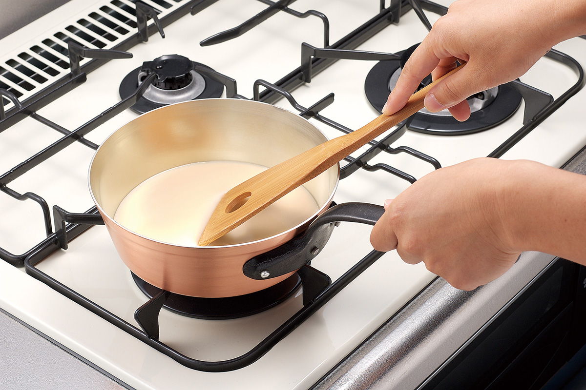
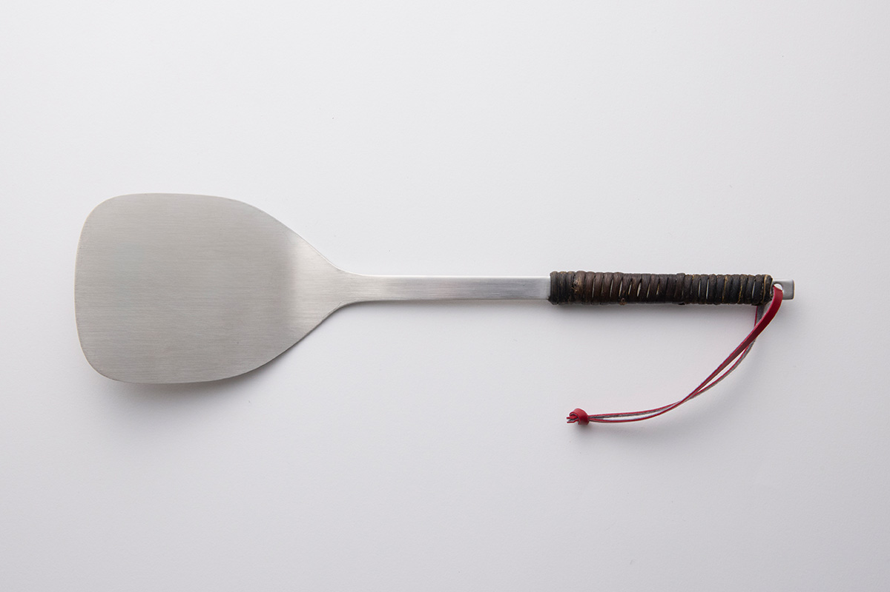
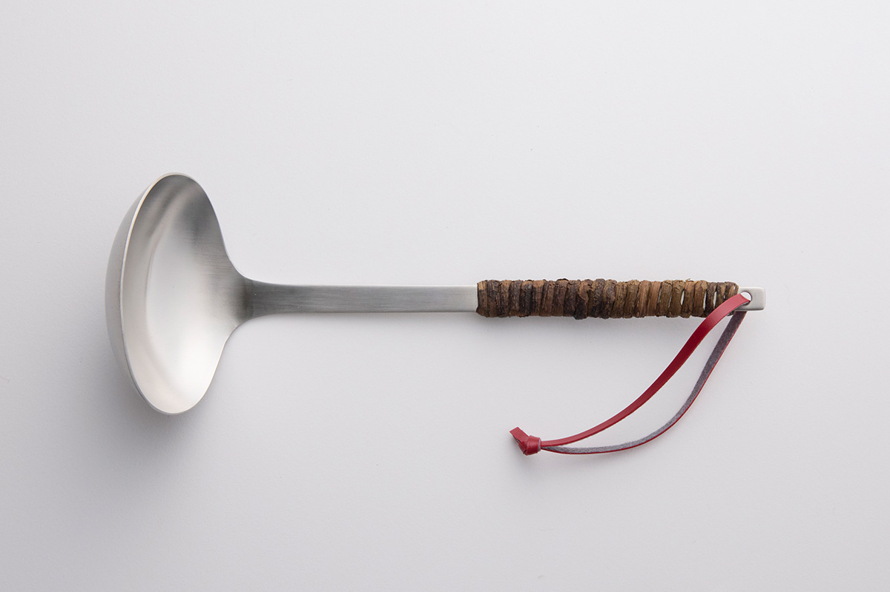
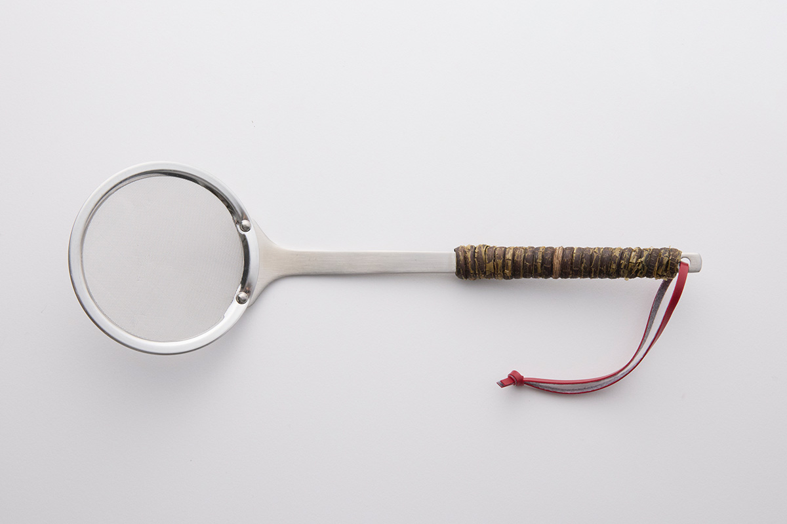
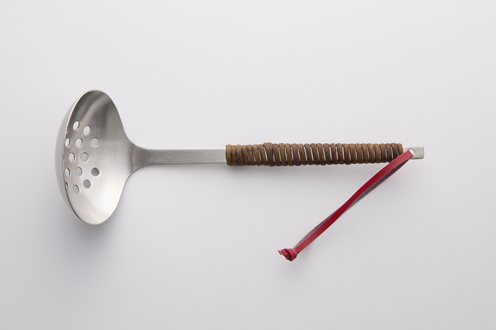
Kobo Aizawa
- Адрес
- префектура Ниигата, Цубамэ
Фото: Юити Ногути, Оки Дзингу, Сихо Акияма, Норихито Судзуки.